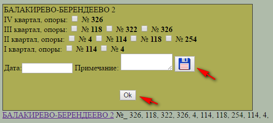

В раздел "Планирование" добавлена возможность вносить изменения в замечания ВИКС за последние четыре квартала.
Автоматически на экран выводятся данные по неустранённым замечаниям 4й и 3й степени. Для того чтобы увидеть неустранённые замечания 2й и 1й степени надо поставить галочку выбора в соответствующих переключателях.
Для того чтобы отметить замечание устранённым, надо щёлкнуть левой кнопкой мыши на названии перегона/станции, после чего появится окно с перечнем замечаний (по номерам опор) по кварталам (см.рисунок):
устранённые замечания помечаем галочкой , в графе "дата" ставим дату устранения, в графе "примечание" пишем номер наряда и ФИО производителя работ. После чего нажимаем кнопку
Кнопка "ОК" закрывает окно без сохранения информации.